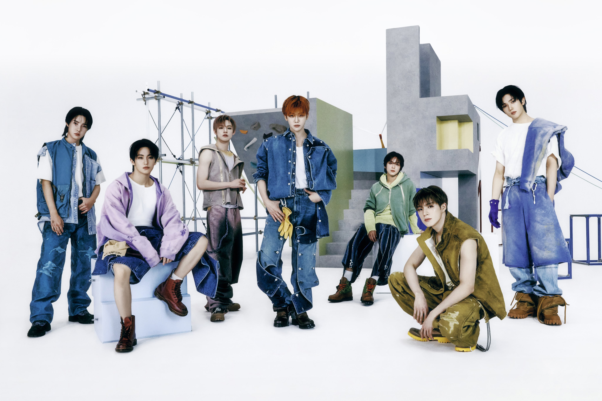

ABOUT NCT DREAM
NCT Dream is a South Korean boy group under SM Entertainment. They officially debuted on August 25, 2016.
All the members of NCT, except for Renjun and Chenle, were formerly part of SM Rookies, a pre-debut group of SM Entertainment trainees.
In January 2016, SM Entertainment founder Lee Soo-man gave a presentation at the SM Coex Artium titled "SMTOWN: New Culture Technology 2016," speaking about the agency's plans for a new boy group in line with their "culture contents" strategy that would be debuting different teams based in different countries around the world.
On August 18, SM Entertainment announced that NCT's third unit would be called NCT Dream and would be composed of teenagers. Their first single, "Chewing Gum," was released on August 24, and the unit had their debut stage on M Countdown on August 25. The unit consists of seven members: Mark, Renjun, Jeno, Haechan, Jaemin, Chenle, and Jisung.
They originally followed a graduation system. However, on April 14, 2020, it was announced that Mark would be brought back following the release of "Reload".
On April 13, 2024, SM Entertainment announced that Renjun would be sitting out of NCT DREAM's upcoming activities due to health issues. On April 20, SM Entertainment released a new statement that revealed that Renjun would go on a temporary hiatus from all activities to focus on treatment and recovery until his health improves.
